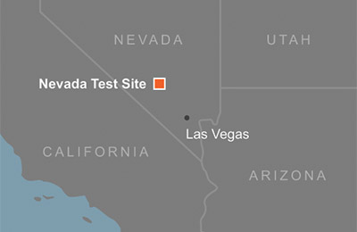

Photo
Map


Established in 1950, the Nevada Test Site (NTS) was the main United States’ location for the testing of nuclear devices for both military and peaceful uses. Between 1945 and the voluntary suspension of testing in 1992 the U.S. conducted 1,051 nuclear tests worldwide – 925 of these were at the NTS. The legacy of that testing is evident in the image to the right of the NTS’s Yucca Flats area. Locations for ### of the tests are plotted in 5-year increments. Click your mouse on the timeline or a symbol to learn more.